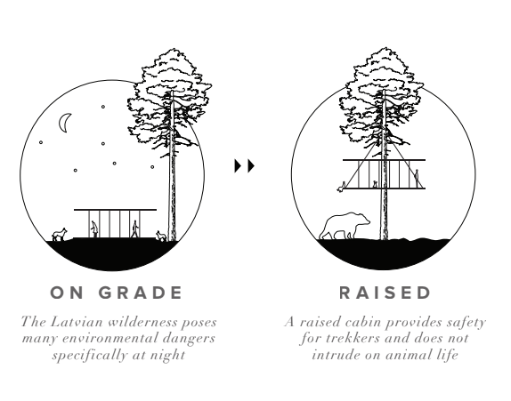
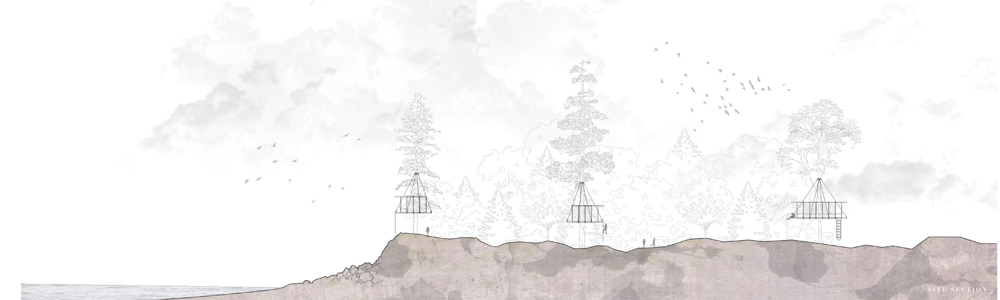
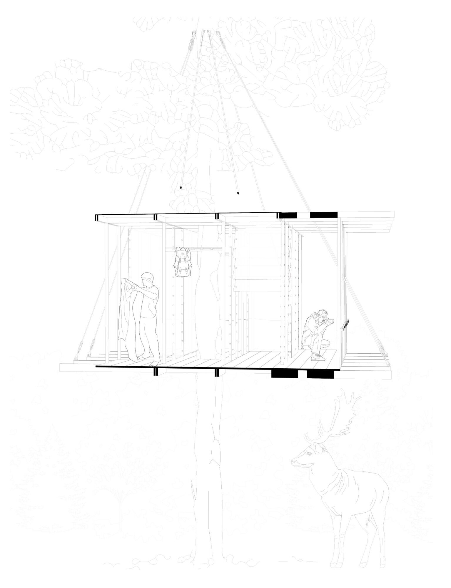
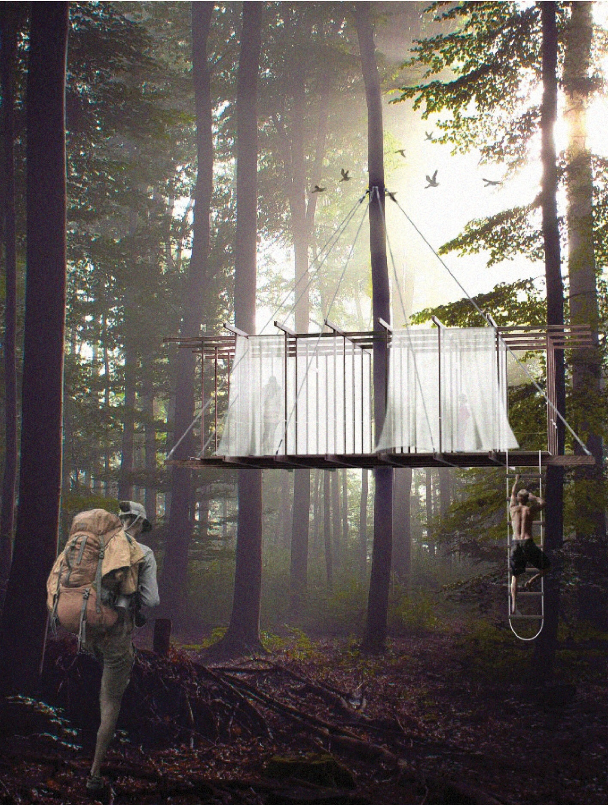
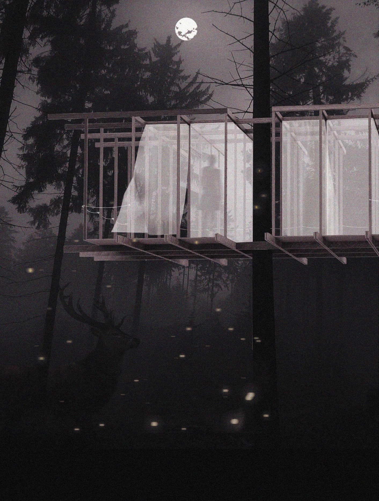
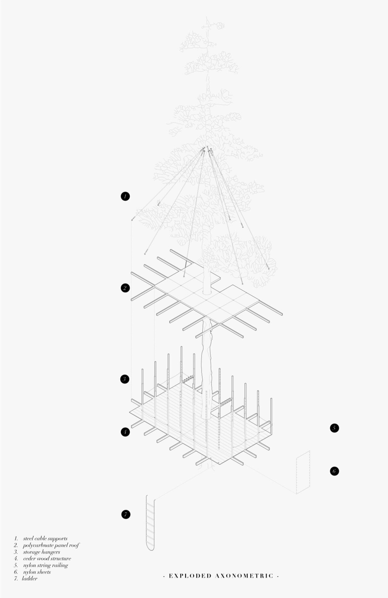

2018
AMBER ROAD CABINS
raised trekking shelters
The cabin design blurs the boundaries between interior and landscape through its use of fabric which serves as the windows, doors and walls all at once, while suspended in the treetops.
CONTEXT
Amber Road Trekking Cabins Competition
LOCATION
Amber Road, Latvia
SOFTWARE
Rhinoceros3D, Photoshop, Illustrator
COLLABORATORS
Shengnan Gao
See it in the 325 Magazine .


The white nylon sheets use button-shaped extrusions on the wooden studs to attach to the structure and can therefore be opened and closed at the visitor’s leisure allowing users to adjust the spaces of the cabin to suit their needs. To minimize the ecological footprint, this building can be mounted on large trees located anywhere along the amber road trekking route. The roof of the cabin is composed of polycarbonate panels which creates a viewport to the sky, making it perfect for stargazing at night.





